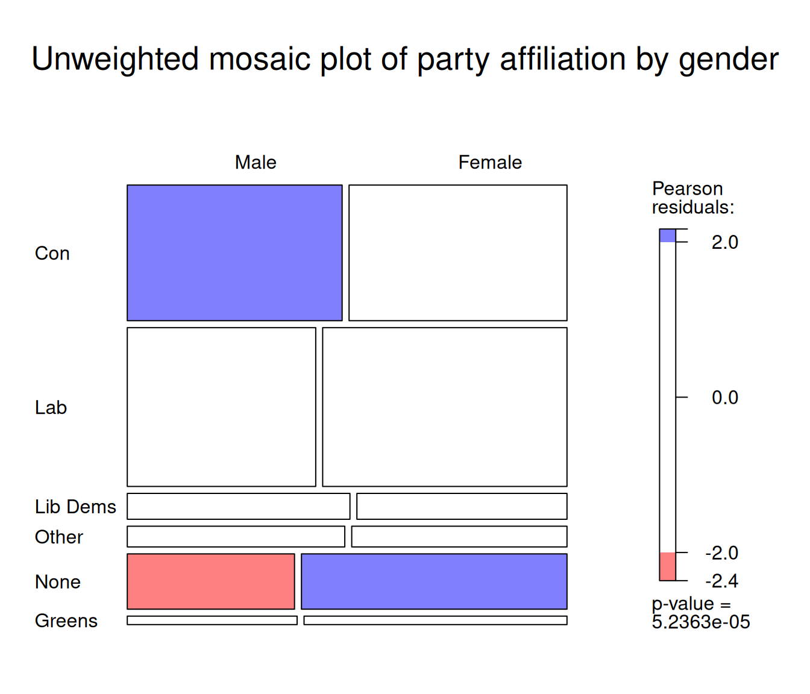

This section describes how to implement common statistical tests in R both without and with weights and survey design information. A working knowledge of these tests and their theoretical assumptions is assumed.
8.1 Differences between means
Two common ways of conducting significance testing consist in testing whether sample means significantly differ from 0 (one sample t-test), or between two groups (two samples t test). In the latter case, one can further distinguish between independent samples (where means come from different groups), or paired samples (when the same measure is taken at several points in time). Given that it is probably one of the most widely used statistical tests in social sciences, we will only cover the former here. Several R packages provide functions for conducting t tests. We will be using t.test(), provided by the stats package (R Base).
Suppose we would like to test whether the libertarianism vs authoritarianism score libauth significantly differs between men and women using a t test. A two sided test is the default, with H_0 or the null hypothesis being that there are no differences between groups, and H_1 or the alternative hypothesis that the group means do indeed differ. The test is specified with a formula with on the left-hand side the quantity to be tested and on the right-hand side the grouping variable.
One sided tests can be conducted by specifying that the alternative hypothesis (H_1) is that quantities are either greater or smaller. t.test() assumes that by default the variances are unequal. This can be changed with the var.equal=T option.
# Testing for significant differences in liberal vs authoritarian scoresummary(t.test(libauth~Rsex.f,data=bsa))
Length Class Mode
statistic 1 -none- numeric
parameter 1 -none- numeric
p.value 1 -none- numeric
conf.int 2 -none- numeric
estimate 2 -none- numeric
null.value 1 -none- numeric
stderr 1 -none- numeric
alternative 1 -none- character
method 1 -none- character
data.name 1 -none- character
No significant differences (ie the difference in libauth between men and women is not significantly different from zero)
# Testing for whether men have a lower (ie more left-wing) scoret.test(leftrigh~Rsex.f,data=bsa, alternative="less")
Welch Two Sample t-test
data: leftrigh by Rsex.f
t = -2.0687, df = 2858, p-value = 0.01933
alternative hypothesis: true difference in means between group Male and group Female is less than 0
95 percent confidence interval:
-Inf -0.01197607
sample estimates:
mean in group Male mean in group Female
2.487564 2.546087
Men have a significantly lower score on the scale (at the .05 threshold) and are therefore on average leaning more to the left than women.
The result of the above tests may be biased as they do not account for bias from either sample design or non-response. When results representative of the British population are required, a survey designed informed version of the t test should be used. The survey package that we used earlier in Chapter 6 provides such a function.
library(survey)bsa.design<-svydesign(ids =~1, # Declaring the survey designweights=~WtFactor,data=bsa) svyttest(libauth~Rsex.f,bsa.design) # SD informed t-test of libauth by gender
Design-based t-test
data: libauth ~ Rsex.f
t = 0.10069, df = 3211, p-value = 0.9198
alternative hypothesis: true difference in mean is not equal to 0
95 percent confidence interval:
-0.05411275 0.05997165
sample estimates:
difference in mean
0.002929454
svyttest(leftrigh~Rsex.f,bsa.design) # SD informed t-test of leftrigh by gender
Design-based t-test
data: leftrigh ~ Rsex.f
t = 2.308, df = 3204, p-value = 0.02106
alternative hypothesis: true difference in mean is not equal to 0
95 percent confidence interval:
0.01085242 0.13337485
sample estimates:
difference in mean
0.07211364
In this case the output of svyttest() did not lead to a different conclusion than the one we drew above. However, we can notice that the significance of differences in political affiliation has decreased.
8.2 Differences in variance
Another common significance test in social science is the variance test which consists of testing whether the variances of the same variable across two groups are equal. This is usually achieved by testing whether the ratio of the variance between the two groups is significantly different from zero. With the BSA data, this amounts to testing whether men and women are more homogeneous with regard to their political views.
The syntax for the variance test var.test() also included in stats is almost identical to that of t.test()
# Testing for gender differences in liberal vs authoritarian scorevar.test(libauth~Rsex.f,data=bsa)
F test to compare two variances
data: libauth by Rsex.f
F = 1.0892, num df = 1434, denom df = 1777, p-value = 0.0879
alternative hypothesis: true ratio of variances is not equal to 1
95 percent confidence interval:
0.9873927 1.2022204
sample estimates:
ratio of variances
1.089239
Significant differences in the variance between men and women was observed, but only at the .1 threshold.
# Testing for whether men have a lower (ie more left-wing) scorevar.test(leftrigh~Rsex.f,data=bsa,alternative="greater")
F test to compare two variances
data: leftrigh by Rsex.f
F = 1.3218, num df = 1433, denom df = 1771, p-value = 1.263e-08
alternative hypothesis: true ratio of variances is greater than 1
95 percent confidence interval:
1.217167 Inf
sample estimates:
ratio of variances
1.3218
The variance of left-right political leaning is larger among men than women, in other words there are more divergence between men than between women.
8.3 Significance of measures of association
Between continuous variables
Another common statistical test in social science examines whether a coefficient of correlation is significantly different from 0 (alternative hypothesis).
Pearson's product-moment correlation
data: bsa$leftrigh and bsa$libauth
t = 0.54472, df = 3202, p-value = 0.586
alternative hypothesis: true correlation is not equal to 0
95 percent confidence interval:
-0.02501074 0.04423951
sample estimates:
cor
0.009625928
As we could have suspected, the correlation coefficient between the two scales is too small to be considered significantly different from zero.
Between categorical variables
Let us go back to an earlier example, and test whether gender differences in political affiliations are due to chance or not using a chi-squared test of independence .
The chi-squared test is a very common test of association between categorical variables. It consists in examining whether a pattern of association between two variables is likely to be random or not, in other words whether the variability observed in a contingency table is significantly different from what could be expected were it due to chance.
We will be using chisq.test(), also from the stats package. By contrast with the test of correlation, the chisq.test() needs to be applied to contingency tables that have already been computed separately.
t<-xtabs(~PartyId2.f +Rsex.f,bsa)chisq.test(t)
Pearson's Chi-squared test
data: t
X-squared = 27.191, df = 5, p-value = 5.236e-05
As the R output shows, there are highly significant gender differences in political affiliations (p<.001).
Does this remain true if we account for the survey design, as we did above for the t test? The survey package also has a survey design version of the chi square test:
svychisq(~PartyId2.f +Rsex.f, # We directly specify the contingency table here bsa.design, statistic ="Chisq"# And we specify the kind of test we would like )
Interestingly this time, when accounting for survey design, sampling and non-response, gender differences in political affiliations are not significant anymore.
Visualising association in contingency tables with mosaic plots
In the previous chapter we used mosaic plots for representing contingency tables of political party affiliation by gender. A nice feature of these plots is that they can also be used to visualise significant deviations between observed and expected values.
This relies on a function specified with the gp= option which defines the shading of the colours of the respective cells according to the size of these deviations fom expected values, also known as residuals. Thresholds for shading can be customised as required.
mosaic(t, shade=T,gp = shading_hsv, # shading functionlabeling=labeling_border(rot_labels =c(0,0,0,0), # no label rotation on any plot facetvarname=F, # no variable names on the plotjust_labels="left", # labels left justifiedgp_labels=gpar(fontsize =12),# label font sizeoffset_labels =c(0, 0, 0, 3) # margins between label and plot facet ),main ="Unweighted mosaic plot of party affiliation by gender"# Plot title )

The red and blue shaded rectangles in the figure above denote respectively lower and higher numbers of observations than expected if the two variables were independent from each other.
Another convenient feature of mosaic() is that it readily accepts weighted contingency tables produced by the survey package. If we repeat what we did in Chapter 6, namely, declare the survey design, and perform a survey design-informed chi square test, we can then feed the weighted frequencies computed by svychisq into the mosaic plot.
library(survey) ### Loading the package in memorybsa.design<-svydesign(ids =~1,weights=~WtFactor,data=bsa) t<-svychisq(~PartyId2.f+Rsex.f,bsa.design,statistic ="Chisq")$observed
The plot below does not display shades of blue or red anymore, reflecting the fact that the weighted distributions of political party affiliation and gender are weakly associated.
mosaic(t, shade=T,gp = shading_hcl,labeling=labeling_border(rot_labels =c(0,0,0,0),varname=F,just_labels="left",gp_labels=gpar(fontsize =12),offset_labels =c(0, 0, 0, 3)),main ="Weighted mosaic plot of party affiliation by gender")